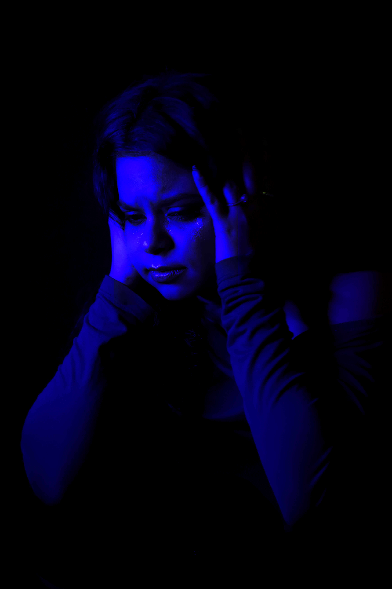
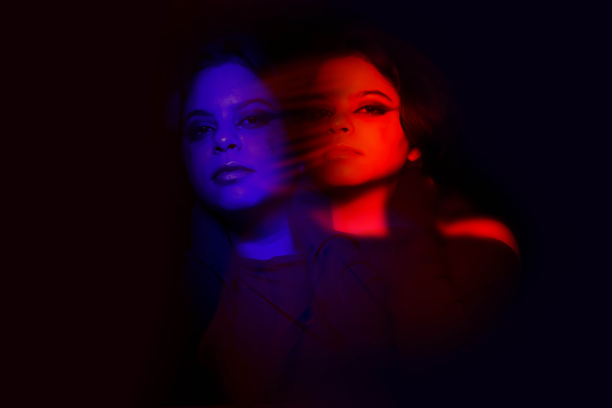
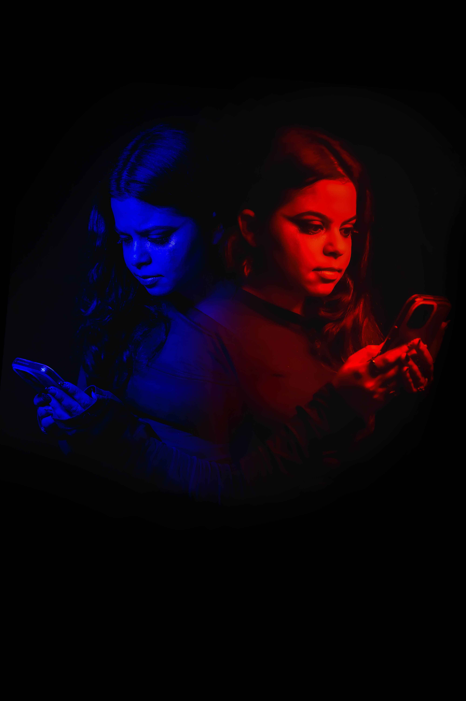
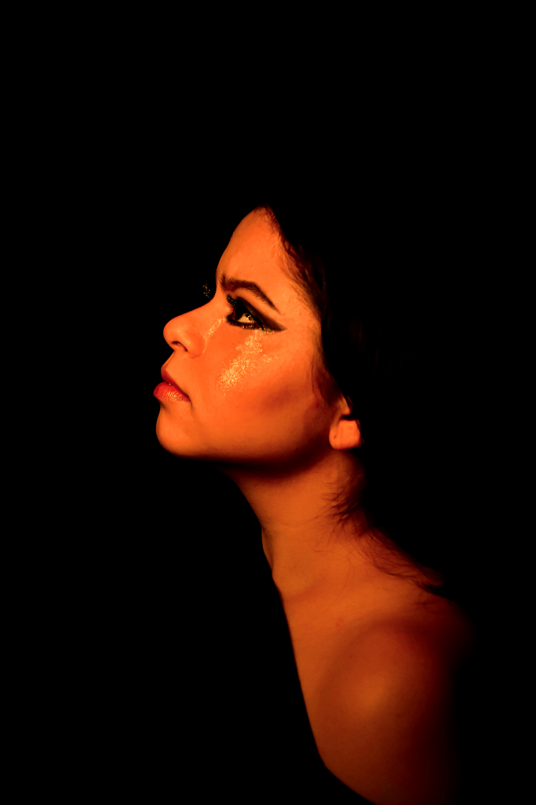

Poesia 01
Filtro Azul
Um belo dia recebi a notícia: miopia, dois graus em cada olho. “Compre um óculos ou viva na cegueira.” Bom... quem quer viver às cegas?

Clique para abrir
✦ digital ✦Vivemos tempos em que tudo chega em segundos, notícias, vídeos, opiniões, mas quase nada permanece. Entre uma notificação e outra, esquecemos de respirar, de olhar em volta, de sentir.
Este é para quem ainda acredita que a vida é mais do que uma tela quadrada. Para quem deseja desligar o automático, desacelerar o toque e voltar a escutar o próprio coração.
Aqui, as palavras não querem te ensinar nada. Querem apenas te fazer sentir.
Porque sentir é o que nos faz humanos, mesmo quando tudo parece girar em pixels.
Essas poesias foram escritas para jovens como você, que vivem conectados, mas às vezes se sentem sozinhos, que sonham em cores, mas enxergam o mundo pelo filtro azul da rotina, que ainda acreditam que a emoção pode caber em versos, mesmo quando o tempo parece não caber em lugar nenhum.
Que o brilho do mundo seja muito mais bonito fora da tela.

Quatro poemas para atravessar a pressa, o excesso de imagem, o peso do cotidiano e aquilo que a vida real ainda insiste em dizer.
Um belo dia recebi a notícia: miopia, dois graus em cada olho. “Compre um óculos ou viva na cegueira.” Bom... quem quer viver às cegas?

Uma frase que gira, volta e insiste. Como um pensamento que não sai da cabeça. Como uma pergunta que a tela evita responder.
Minha mãe sempre dizia que “pra começar um bom dia, precisa começar com um bom café da manhã”. E seu segredo era preparar a sua dose amarga do dia.


Até parece que é fácil viver. A vida não é esse Instagram todo.
Comentários